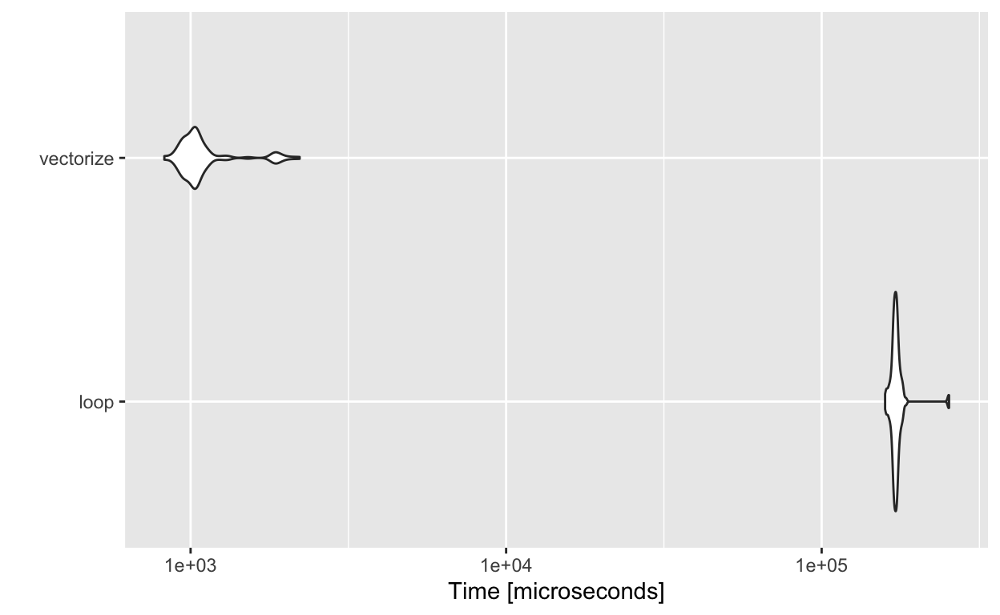

Introduction
In the previous tutorial, you learned about using for loops to repeat an operation in each value in a series of values. In this tutorial, we will contrast for loops with an alternative technique, vectorization. You will learn how to vectorize functions as well as compare the time it takes to run functions in R with a technique called benchmarking.
We will learn the following R Commands:
install.packages()runif()microbenchmark()mean()summary()autoplot()vector()bind_rows()list.files()vapply()sapply()lapply()map()str()map2()pmap()
And we will use the following dataset:
The flights dataset from the R package nycflights13, which contains all flights out of New York City in 2013.
Benchmarking
Before we learn how to compare for loops to vectorization, we need to learn about benchmarking. Benchmarking is used to measure the amount of time it takes to perform a computation in R. There are a number of ways to do so, but we will be using the R package microbenchmark (link to CRAN page).
microbenchmark
To install microbenchmark, run the following code:
install.packages('microbenchmark')Then to use it, load the library:
library(microbenchmark)We can then use the microbenchmark() function to output timing results for a line of R code. Here, let’s show how to measure the time it takes to get the mean of a numeric vector.
vec <- runif(100) # randomly sample 100 values from a uniform distribution
test_results <- microbenchmark(mean(vec)) # benchmarking the time it takes to get the mean of a vectormicrobenchmark() works by running the code many times and calculating the runtime for each calculation. Each individual runtime is stored in test_results. Let’s take a look at them here:
test_resultsAs you can see, there is some variability in runtime. This happens for a variety of reasons, but it doesn’t particularly matter for us. We are interested in how long things generally take to run in R, so we’ll compute some summary statistics. We can summarize the results using summary(test_results).
summary(test_results)The results here are in a dataframe, showing the expression run, along with its min, mean, median, upper and lower quartiles, and the number of times it was ran. You also get information about what unit the runtime was measured in. Here, it’s microseconds. In this case, the calculation is incredibly fast - the mean runtime was 3.7059 microseconds.
If you’re interested in more specifics of microbenchmark(), run ?microbenchmark or help("microbenchmark") in your RStudio console. There are a number of optional arguments to the microbenchmark() function, including times, which specifies the number of times to evaluate the expression, and unit, the unit of measurement for the runtime.
using microbenchmark to compare code
microbenchmark's real power comes from its ability to compare different expressions in R. Let’s see if the R function mean() is faster than computing it ourselves using the sum() and length() functions.
test_results_2 <- microbenchmark(
'mean()'=mean(vec),
'sum()&length()'=sum(vec)/length(vec)
)
summary(test_results_2)Here, the results are in nanoseconds. It turns out that using sum() and length() is actually faster than mean(). However, with a difference as trivial as 1747.37 nanoseconds, it’s probably best to use the simple convenience function mean().
Plotting results
You can even plot the results quite easily, using the autoplot() function from ggplot2, which automatically draws the plot that works best with the class of object it is given (in this case, it makes a violin plot).
autoplot(test_results_2)
Calculating a mean of 100 numbers is a computationally trivial thing to do. However, not all the code you write will be doing something so simple. Next, we will learn how for loops and vectorization compare, and then measure the differences using microbenchmark.
Exercise 1
Below we create a numeric vector, called vector_1.
vector_1 <- c(5,4,3,1,6,4,3,2,6,4,2,1,5,6,7,3,2,9,5,8,9)Standardize the vector by subtracting the mean of vector_1 from each score and then dividing by vector_1’s standard deviation. Then, use microbenchmark() to measure the computation time in seconds, and plot your results.
#standardize vector_1 and use microbenchmark() to measure the computation time.vector_1_stdize <- (vector_1-mean(vector_1))/sd(vector_1)
results <- microbenchmark(
'standardize'= vector_1_stdize <- (vector_1-mean(vector_1))/sd(vector_1),
unit='s'
)
autoplot(results)For loop review
Let’s start off with a review of for loops. To do so, we’re going to use the flights dataset.
In this dataset, each row is an individual flight out of New York City. The column dep_delay contains the difference between the scheduled departure and the actual departure time, but in minutes. Now let’s say we wanted to convert that to hours. To do so, we would divide each value in dep_delay by 60. We can do that using a for loop, and store the results in a vector.
First, we store all the departure delays in minutes, in a vector called delays_mins(making sure to remove NA values for when a delay was not available). The number of delays is calculated using the length function, and is stored as n_delays. Then, we create the vector delays_hours_loop to store the results of our computation, and the mins_to_hours() function to actually compute the results.
delays_mins <- !is.na(flights$dep_delay) #for simplicity, we remove NA values
n_delays <- length(delays_mins) #number of delays will equal the length of the vector
delays_hours_loop <- vector('numeric',n_delays) # to store our results
mins_to_hours <- function(x) x/60 # custom function to convert minutes to hours
for(i in 1:n_delays){
delays_hours_loop[i] <- mins_to_hours(delays_mins[i])
}head(delays_hours_loop)## [1] 0.01666667 0.01666667 0.01666667 0.01666667 0.01666667 0.01666667The operation worked just fine, and the results are stored in delays_hours_loop. However, given that there are 336776 observations in this dataset, you may imagine that this many individual function calls can get computationally intensive. Though our current function is fairly simple, you may imagine that with more complex operations, the computation cost will add up fast. The next section will go through an alternative to for loops.
Vectorization
Rather than using a for loop, we can vectorize our conversion of minutes to hours function by applying it to all the elements in delays_mins simultaneously. This is called vectorizing. Doing so is fairly simple, and it’s often faster than a for loop.
We can use our previous example of converting flight delays to hours.
delays_mins <- !is.na(flights$dep_time) # remove all flights with NA dep_time
delays_hours <- delays_mins/60 # convert mins to hours by dividing by 60Notice that here, we didn’t even have to write a function. We just performed the operation by dividing delays_mins by 60 (which automatically performs the division on each element of the vector, i.e. vectorizing). We could have called the mins_to_hours() function, but it’s not necessary to do so.
Comparing vectorization to loops
Now that we know about for loops and vectorization, we can use microbenchmark to compare the two. We will use the same example, converting delays_mins to hours, using both methods.
results_lv <- microbenchmark(
'loop'=for(i in 1:n_delays){
delays_hours_loop[i] <- mins_to_hours(delays_mins[i])
},
'vectorize'=delays_hours_vectorize <- delays_mins/60
)
summary(results_lv)autoplot(results_lv)
Even ignoring the obvious the advantage of being simpler to read, vectorization is clearly faster than a for loop in this case.
Vectorization using the apply family of functions
Sometimes you have something more complicated, that can’t be performed in a single line of code. You can do it in a for loop, or you can use a function from the apply family to vectorize it.
To demonstrate the apply functions, let’s start out with a common example: Reading in data files.
It’s common to have to read in multiple data files in social science research. You may have an individual data file for each participant, and you need to combine them all into a single data frame in R.
First, we’ll use list.files() to store the names of all files in our current working directory to an object in R.
files <- list.files()
head(files)## [1] "1.csv" "10.csv" "11.csv" "12.csv" "13.csv" "14.csv"As you can see, we have a number of data files in our directory, all stored as files with a .csv extension.
We can use a for loop to read in all the data files, and save each one as a dataframe inside a list.
data <- vector('list',length(files)) #initialize list
for(i in 1:length(files)){
data[[i]]<-read_csv(files[[i]])
}Finally, we can use the dplyr function bind_rows() to bind all the dataframes into one, larger dataframe.
dataset <- data %>%
bind_rows()
glimpse(dataset)## Rows: 2,000
## Columns: 5
## $ var1 <dbl> 0.26550866, 0.37212390, 0.57285336, 0.90820779, 0.20168193, 0.898…
## $ var2 <dbl> 16.54724, 13.53197, 12.70260, 19.92684, 16.33493, 12.13208, 11.29…
## $ var3 <chr> "d", "b", "a", "b", "b", "b", "c", "a", "b", "c", "c", "c", "c", …
## $ var4 <dbl> 72.25094, 69.90720, 68.40966, 65.35319, 62.56270, 64.62404, 75.00…
## $ var5 <chr> "orange", "orange", "orange", "red", "red", "orange", "orange", "…But wait! There’s a simpler (often faster) way to do it, using the apply family of functions.
There are several apply functions in R, including lapply(), sapply(), vapply(). They all work by taking an argument X, which is a data structure (e.g., vector) containing all the elements to apply a function to. The function is specified with the argument FUN.
lapply()
There are some differences between the functions, so we’ll start out with (arguably) the most common version, lapply(). lapply() always returns data in the form of a list.
Below we use lapply() to use the read_csv() function on each element of files. We then use the dplyr function bind_rows() to combine the results into one larger dataframe, called data1.
data1 <- lapply(files, read_csv) %>%
bind_rows()
glimpse(data1)## Rows: 2,000
## Columns: 5
## $ var1 <dbl> 0.26550866, 0.37212390, 0.57285336, 0.90820779, 0.20168193, 0.898…
## $ var2 <dbl> 16.54724, 13.53197, 12.70260, 19.92684, 16.33493, 12.13208, 11.29…
## $ var3 <chr> "d", "b", "a", "b", "b", "b", "c", "a", "b", "c", "c", "c", "c", …
## $ var4 <dbl> 72.25094, 69.90720, 68.40966, 65.35319, 62.56270, 64.62404, 75.00…
## $ var5 <chr> "orange", "orange", "orange", "red", "red", "orange", "orange", "…In the above code, lapply calls the read_csv() function once for each value files. Each time it calls read_csv(), it uses that particular value in files as input to the function.
Note that the results will be identical between the for loop and the lapply version.
However, the lapply version is both simpler to read and computationally faster (though the advantage is small). We can verify this using microbenchmark.
files <-list.files()
result <- microbenchmark(
'loop'=for(i in 1:length(files)){
data[[i]]<-read_csv(files[[i]])
},
'lapply'=data1 <- lapply(files, read_csv),
times = 50, # 'times' is used to specify the number of times to run each chunk of code
unit='s' # 'unit' specifies the unit of measurement we ask for ('s'=seconds)
)
summary(result)autoplot(result)
Other apply functions
There’s other apply functions, too. We will briefly go into discussion of a few helpful versions - sapply() and vapply()
sapply()
sapply() is very similar to lapply(), except that it attempts to simplify the result to an atomic vector if possible (whereas lapply() always returns a list). Observe the difference below, when we use a trivial example with a custom function that multiplies its input by 3.
triple <- function(x) x*3
x <- seq(0,10)
result_lapply <- lapply(x, triple)
result_sapply <- sapply(x, triple)
head(result_lapply)## [[1]]
## [1] 0
##
## [[2]]
## [1] 3
##
## [[3]]
## [1] 6
##
## [[4]]
## [1] 9
##
## [[5]]
## [1] 12
##
## [[6]]
## [1] 15head(result_sapply)## [1] 0 3 6 9 12 15As you can see, lapply() returns a list, whereas sapply() was able to simplify the result to an atomic vector.
vapply()
vapply() is similar to sapply, though it requires a third argument, FUN.VALUE, where the user must specify the format that they expect the results to be in.
Below, we use numeric(1) to tell vapply() that each time we call the function (that is, for each element of x) we expect a numeric result of length 1. vapply() ensures that if the computation does not work as we intended, we will not get a result, forcing us to look at our code once more to ensure that it works as we intended.
vapply(x, triple, numeric(1))## [1] 0 3 6 9 12 15 18 21 24 27 30Exercise
Below we create a numeric vector, called vector_3.
vector_3 <- round(rnorm(50,mean=30,sd=5))Write a function that takes a single input, x. The function squares x and then adds 1 to the result. Then, apply the function to each element of vector 3, once using lapply() and once using sapply().
function_1 <- function(x) x^2+1
lapply(vector_3, function_1)
sapply(vector_3, function_1)purrr
In addition to the apply functions already included in R, there’s a powerful package created to enhance your R vectorization: the purrr package, which is part of the tidyverse (see this link to learn more).
To install purrr, simply run the following code:
install.packages("purrr")purrr is a powerful package containing a number of functions, and thus learning all of purrr is well beyond the scope of the present tutorial.
With that being said, we will be going over a few helpful purrr functions that can be beneficial for those trying to vectorize code.
map()
map() allows us to vectorize a function - that is, “apply it to each element of a list or vector”.
The first argument map() takes, .x, is the vector or list we wish to apply the function to. The second argument, .f, is the function we’re using. Let’s try an example.
First, we create a vector of integers from 1 to 100, vector_2. Next, we are going to use map() to take 100 random samples (of 50 values) from a normal distribution with a standard deviation of 5. Importantly, each sample has a different mean, which is specified by each element of vector_2. The first time rnorm() runs, it will take 50 random samples with a mean of 1 (the first element of vector_2). The second time rnorm() runs, it will take 50 random samples with mean of 2 (the second element of vector_2). All in all, we will get a list of 100 elements, with each element containing 50 numbers sampled from a normal distribution with the mean equal to the list index. For example, the 23rd list element will contain 50 values randomly sampled from a normal distribution with a mean of 23 and a standard deviation of 5. We specify n and sd in subsequent arguments.
vector_2 <- seq(1,100) # sequence of integers from 1 to 100
map_results <- map(vector_2, rnorm,n=50, sd=5) # run rnorm() using each element of the vector as the "mean" argument
str(map_results)## List of 100
## $ : num [1:50] 4.191 -3.941 2.121 9.799 0.602 ...
## $ : num [1:50] 3.3228 0.0617 -9.5605 2.4401 3.8654 ...
## $ : num [1:50] -5.88 1.32 5.66 3.56 5.83 ...
## $ : num [1:50] 1.78 7.25 10.8 9.86 7.53 ...
## $ : num [1:50] 5.93 9.65 2.06 1.33 9.1 ...
## $ : num [1:50] -0.631 1.472 18.288 6.474 4.996 ...
## $ : num [1:50] 0.238 11.347 2.793 -0.532 -3.342 ...
## $ : num [1:50] -1.77 7.56 15.26 13.91 3.26 ...
## $ : num [1:50] 7.78 3.36 13.71 14.03 9.68 ...
## $ : num [1:50] -3.98 11.63 13.1 7.78 6.2 ...
## $ : num [1:50] 3.36 3.42 5.71 5.41 11.32 ...
## $ : num [1:50] 8.62 15.22 18.88 11.27 12.66 ...
## $ : num [1:50] 18.7 15.6 19.8 11 16.8 ...
## $ : num [1:50] 7.74 5.53 18.85 21.77 2.98 ...
## $ : num [1:50] 19.27 16.64 22.56 3.06 8.28 ...
## $ : num [1:50] 20.9 17.8 26.6 11.3 16.2 ...
## $ : num [1:50] 13.1 18.2 20.7 20.6 26 ...
## $ : num [1:50] 19.7 9.3 15.5 15.8 16.5 ...
## $ : num [1:50] 16.5 23.2 19.8 17.7 24.3 ...
## $ : num [1:50] 21.6 23.3 24.5 22.4 28.2 ...
## $ : num [1:50] 21.7 25.7 16 22.6 18.9 ...
## $ : num [1:50] 27.4 17.3 21.9 17.8 11.6 ...
## $ : num [1:50] 18.4 24.7 25.3 32.4 27.2 ...
## $ : num [1:50] 25.2 20.8 17.7 21.7 25.6 ...
## $ : num [1:50] 24.3 26.8 32.6 29 26.9 ...
## $ : num [1:50] 31.7 33 17.6 28 22.3 ...
## $ : num [1:50] 21.3 11.4 20 25.4 21.4 ...
## $ : num [1:50] 32 22 37.3 25 32.2 ...
## $ : num [1:50] 39.5 38.5 30.1 30.3 32.1 ...
## $ : num [1:50] 37.4 27.2 35.8 33.5 38.1 ...
## $ : num [1:50] 32.4 17.7 25.8 33.6 25.5 ...
## $ : num [1:50] 30.2 34.1 32.2 24.6 28.3 ...
## $ : num [1:50] 41.4 26.1 27.3 27.7 34.4 ...
## $ : num [1:50] 31.3 41 35.7 33.7 43.4 ...
## $ : num [1:50] 39.9 39 27.8 30 29.3 ...
## $ : num [1:50] 30.3 43.9 37.7 41 38.4 ...
## $ : num [1:50] 45.5 33.7 34.5 34.8 31.6 ...
## $ : num [1:50] 42.2 38.2 33.5 39.8 34.1 ...
## $ : num [1:50] 38.7 35 48.4 46.7 32.8 ...
## $ : num [1:50] 40.8 41.9 40 37.8 39.1 ...
## $ : num [1:50] 39.5 37 43.5 39.7 40.1 ...
## $ : num [1:50] 40.2 46.2 53 41.9 40.5 ...
## $ : num [1:50] 47.9 38.3 32.8 34.7 45.3 ...
## $ : num [1:50] 49.6 38.7 35.7 40.6 48.5 ...
## $ : num [1:50] 41 50.7 42.3 46.8 42.9 ...
## $ : num [1:50] 43.1 37.8 43.7 55.3 45.7 ...
## $ : num [1:50] 43.5 46.5 54.6 45.2 51.1 ...
## $ : num [1:50] 45.6 54.4 43.9 52.6 51.4 ...
## $ : num [1:50] 49.7 53.1 47.6 46.6 45.2 ...
## $ : num [1:50] 46 47.3 48.1 46.8 46.6 ...
## $ : num [1:50] 49.5 44.9 47.1 53.9 48.4 ...
## $ : num [1:50] 54.1 47.5 54 55.5 59.7 ...
## $ : num [1:50] 61.1 58.1 56.9 50.9 59.1 ...
## $ : num [1:50] 60.5 47.2 60.6 59.1 49.8 ...
## $ : num [1:50] 54.2 55.6 46.7 56.5 52 ...
## $ : num [1:50] 64.4 57.9 56 52.1 57.4 ...
## $ : num [1:50] 64.3 56.1 57.8 58.3 52.3 ...
## $ : num [1:50] 57.8 55.5 55 57.6 63.5 ...
## $ : num [1:50] 55.2 55.2 51 62.7 61.2 ...
## $ : num [1:50] 46.8 56 56 57.4 63.2 ...
## $ : num [1:50] 54.4 53.9 60.7 60 61.3 ...
## $ : num [1:50] 64 57.8 74.1 60.5 63.6 ...
## $ : num [1:50] 64.9 64.6 59.8 61.7 67.8 ...
## $ : num [1:50] 68.2 70.8 59.4 56.5 63.4 ...
## $ : num [1:50] 53.4 64.6 62.2 59 79.7 ...
## $ : num [1:50] 60.6 64.1 69 67.1 61.2 ...
## $ : num [1:50] 59.3 69.6 64.1 70.5 63 ...
## $ : num [1:50] 73.5 81.5 75.7 71 71.5 ...
## $ : num [1:50] 67.8 68.4 77 61 70 ...
## $ : num [1:50] 64.4 66.1 58.6 64 64.4 ...
## $ : num [1:50] 82 74.1 62.6 73.4 78.2 ...
## $ : num [1:50] 71.6 76.8 76.5 73.3 66.2 ...
## $ : num [1:50] 71.5 75.8 77.3 69.5 74.2 ...
## $ : num [1:50] 73.8 82.4 72.4 68.4 78.9 ...
## $ : num [1:50] 75.3 72.6 68.9 81.1 71.1 ...
## $ : num [1:50] 73.3 71.9 77.1 73.2 77 ...
## $ : num [1:50] 70.6 83.1 78.8 79.4 76.1 ...
## $ : num [1:50] 63.3 72.1 78.3 80.8 82.2 ...
## $ : num [1:50] 73.8 79 76.5 69.7 72.8 ...
## $ : num [1:50] 88.2 72.4 76.1 79.2 70.5 ...
## $ : num [1:50] 85.1 78.4 79.5 85.2 83.2 ...
## $ : num [1:50] 76.2 75.7 75.5 83.3 78.5 ...
## $ : num [1:50] 74.4 75 84.9 83.6 89.1 ...
## $ : num [1:50] 78.1 79.6 85.1 88.7 84.7 ...
## $ : num [1:50] 81.9 91 90.4 89.2 78.5 ...
## $ : num [1:50] 82.3 86.5 79.1 79 80 ...
## $ : num [1:50] 87.9 86.2 87.6 88.9 89 ...
## $ : num [1:50] 91.8 80.9 101 90.5 88.3 ...
## $ : num [1:50] 87.3 87.5 81.7 92.7 86.5 ...
## $ : num [1:50] 93.6 82.9 100.3 91.9 84.8 ...
## $ : num [1:50] 90.7 87.8 83.3 94 88.9 ...
## $ : num [1:50] 84.5 91 107 96.6 93.9 ...
## $ : num [1:50] 95.1 104.1 93.5 88.7 95.1 ...
## $ : num [1:50] 100.3 94.6 89.6 99.3 86.4 ...
## $ : num [1:50] 85.4 96.2 91.2 102.3 97.2 ...
## $ : num [1:50] 94.9 91.9 91.8 101.4 96.4 ...
## $ : num [1:50] 102.6 103.1 93.8 101.8 92.7 ...
## $ : num [1:50] 105.5 94 99.8 97.2 92.1 ...
## $ : num [1:50] 101.9 100.7 94.2 101.9 101.5 ...
## [list output truncated]We store our results in an object called map_results. We use str() to view the structure of the object, which is a list of 100 elements, each of which is a vector containing 50 values.
map2()
Suppose we have two vectors, means_vector and sd_vector, each of which contains 100 values. We want to take 100 samples from a normal distribution, each with 50 values, with each mean equal to the ith element of means_vector and the standard deviation equal to the ith element of sd_vector. This may sound complicated, but we can actually do it rather simply using the purrr function map2(). See the code below for a demonstration.
map2() takes the arguments .x (the first vector or list), .y (the second vector or list), .f (the function to apply), and any additional arguments to pass to .f with ....
First, we create a vector containing each individual mean we want to use for sampling, means_vector. Next, we create a vector containing each individual standard deviation we want to use for sampling, sd_vector. These are both vectors containing integers from 1 to 100.
Next, we specify the first vector given to map2(), means_vector. We then specify the second vector given to map2(), sd_vector. Next, we specify the function we are vectorizing, in this case, rnorm(). Lastly, we will also need to tell rnorm() how many values to sample each time, so we specify n=50.
This line of code will create 100 samples, each with 50 values. The first sample comes from a normal distribution with a mean of means_vector[1] and a standard deviation of sd_vector[1]. The second sample comes from a normal distribution with a mean of means_vector[2] and a standard deviation of sd_vector[2]…and so on. These samples are stored in a list as map2_results, and we use str() to view the structure of this object.
means_vector <- seq(1,100)
sd_vector <- seq(1,100)
map2_results <- map2(means_vector, sd_vector, rnorm, n=50)
str(map2_results)## List of 100
## $ : num [1:50] 0.6407 0.4426 -0.0891 0.0986 1.414 ...
## $ : num [1:50] -0.0151 3.193 -2.1422 0.2657 1.9328 ...
## $ : num [1:50] 6.99 9.53 2.4 1.55 6.84 ...
## $ : num [1:50] 3.24 3.296 6.064 10.953 -0.566 ...
## $ : num [1:50] 0.625 12.786 -0.227 2.665 9.965 ...
## $ : num [1:50] 5.68 22.73 7.72 8.89 -5.19 ...
## $ : num [1:50] 5.384 0.125 -0.929 5.94 14.55 ...
## $ : num [1:50] 11.34 22.45 12.65 14.76 -5.41 ...
## $ : num [1:50] 22.97 17.41 -7.69 16.43 -1.1 ...
## $ : num [1:50] -16.26 12.47 28.87 9.52 20.66 ...
## $ : num [1:50] 25.8 -6.98 41.96 3.35 16.81 ...
## $ : num [1:50] 8.49 16 33.56 23.21 17.07 ...
## $ : num [1:50] 6.51 23.2 19.01 4.11 24.62 ...
## $ : num [1:50] 4.956 24.98 2.017 40.982 -0.348 ...
## $ : num [1:50] 35.53 -12.04 24.61 7.4 -4.11 ...
## $ : num [1:50] 10.7 34.6 15 15.2 32 ...
## $ : num [1:50] 13.34 21.83 -30.89 2.91 17.28 ...
## $ : num [1:50] 41.6 6.48 3.47 27.25 21.12 ...
## $ : num [1:50] 23.26 9.39 43.58 -1.28 9.57 ...
## $ : num [1:50] 22.9 3.1 72.3 17.9 30.7 ...
## $ : num [1:50] 23.7 16.2 23.9 22.3 46.1 ...
## $ : num [1:50] -8.995 20.184 28.095 -0.174 -3.44 ...
## $ : num [1:50] 64.6 50.28 74.64 18.58 2.33 ...
## $ : num [1:50] 12.65 3.26 55.39 6.89 51.83 ...
## $ : num [1:50] 32.2 28.3 -39.4 35.7 29.3 ...
## $ : num [1:50] -10.5 19.9 43.3 52.1 56.1 ...
## $ : num [1:50] 60.459 37.558 -17.711 0.334 8.672 ...
## $ : num [1:50] 40.55 -5.51 11.01 66.6 -4.2 ...
## $ : num [1:50] -20.6 65.5 27.1 9.8 16.4 ...
## $ : num [1:50] 15.6 35.8 77.4 5.2 10.9 ...
## $ : num [1:50] 32.6 28.5 -47.2 64.4 83 ...
## $ : num [1:50] 81.42 55.06 7.04 17.47 10.33 ...
## $ : num [1:50] 88.6 22.6 52.8 -42.4 12 ...
## $ : num [1:50] 31.97 -4.22 92.82 13.71 -4.15 ...
## $ : num [1:50] -34.76 32.42 66.6 59.14 9.82 ...
## $ : num [1:50] -22.836 24.538 -14.067 58.152 0.286 ...
## $ : num [1:50] 25.5 65.7 34.8 66.3 41.3 ...
## $ : num [1:50] 26.2 37.3 99.2 71.2 15.3 ...
## $ : num [1:50] 70.6 -16.3 -56.9 -16.1 74.1 ...
## $ : num [1:50] 75.9 -24.3 46 18.5 148.4 ...
## $ : num [1:50] 57.3 108 138.5 60.6 59.3 ...
## $ : num [1:50] 26.63 65.24 56.04 13.09 -2.73 ...
## $ : num [1:50] 28.8 40.7 37.7 76.7 24.9 ...
## $ : num [1:50] 122.4 52.1 54.5 70.9 12.4 ...
## $ : num [1:50] 61.1 39.2 159.5 22.9 108.7 ...
## $ : num [1:50] 12.63 62.92 41.922 0.164 -8.292 ...
## $ : num [1:50] -1.691 -0.645 17.774 75.641 142.317 ...
## $ : num [1:50] -31.5 109.4 88.4 103.2 111.9 ...
## $ : num [1:50] 94.6 69.7 95.9 24.8 57.5 ...
## $ : num [1:50] 43.9 63 111.3 13.1 171.1 ...
## $ : num [1:50] 62.6 78.5 -53 99.7 21.3 ...
## $ : num [1:50] 33.95 2.98 37.99 69.69 28.38 ...
## $ : num [1:50] 41.3 -57.6 25.7 -64.5 23.6 ...
## $ : num [1:50] 52.2 101.5 24.8 82.7 95.6 ...
## $ : num [1:50] 9.77 75.6 40.67 62.73 68.82 ...
## $ : num [1:50] 66.4 45.7 127 28.3 47.3 ...
## $ : num [1:50] 30.78 74.16 92.23 -28.6 8.71 ...
## $ : num [1:50] 211 21.9 173.6 81.4 29 ...
## $ : num [1:50] 185.57 111.02 -7.56 24.77 -3.12 ...
## $ : num [1:50] 57.73 -5.02 81.42 20.6 182.39 ...
## $ : num [1:50] 71.5 53.1 93.3 -12.4 89.6 ...
## $ : num [1:50] 24 68.3 54.6 216.3 101.7 ...
## $ : num [1:50] 75.1 99 39.1 35.7 58 ...
## $ : num [1:50] 44.6 -22.5 -20.3 75.6 82 ...
## $ : num [1:50] 23.1 86 11.3 43.4 10.7 ...
## $ : num [1:50] 178 75.7 211.5 61.5 147.8 ...
## $ : num [1:50] 116.9 129.2 77.5 -21.9 77.8 ...
## $ : num [1:50] 85 43.9 78.04 1.52 115.84 ...
## $ : num [1:50] 50.4 116.8 79 -32.6 56.5 ...
## $ : num [1:50] 68.42 149.6 88.7 66.76 -3.79 ...
## $ : num [1:50] 82.4 41 143.8 -90.6 -10 ...
## $ : num [1:50] 86.39 25.52 162.04 -7.54 41.91 ...
## $ : num [1:50] 57.1 157.3 135.5 75.7 97.5 ...
## $ : num [1:50] 30.8 96.6 18.5 91.3 87.9 ...
## $ : num [1:50] 38.56 46.85 30.29 160.63 -1.77 ...
## $ : num [1:50] 60.8 16 -17.8 119.2 29.6 ...
## $ : num [1:50] 98.7 135.7 117.8 46.8 102.7 ...
## $ : num [1:50] 18.6 -20.3 55.2 94.1 83.5 ...
## $ : num [1:50] -57.6 47.3 161.5 70.9 30.1 ...
## $ : num [1:50] 107.9 54.1 62 50.3 218.9 ...
## $ : num [1:50] 26 82.1 -71.7 156.4 89.2 ...
## $ : num [1:50] 88.55 -42.35 49.35 82.38 9.56 ...
## $ : num [1:50] 15.8 76.1 18.2 50.8 142.1 ...
## $ : num [1:50] 87 57.5 169.5 62.1 -60.3 ...
## $ : num [1:50] 217.7 143.5 175.8 80.9 111.6 ...
## $ : num [1:50] -21.6 34.7 156.6 112.6 120.9 ...
## $ : num [1:50] 186 125.4 153.8 35.3 71.7 ...
## $ : num [1:50] 65.9 268.6 37 63.8 -55.2 ...
## $ : num [1:50] 19.2 95.3 12.3 210.5 60.9 ...
## $ : num [1:50] 295 163 102 154 221 ...
## $ : num [1:50] 182.7 64 124.9 50.2 51.1 ...
## $ : num [1:50] -13.6 110.8 95 93.9 267.2 ...
## $ : num [1:50] 104.9 180.4 150.5 -72.3 91.5 ...
## $ : num [1:50] 122.74 189.31 -146.2 138.79 3.52 ...
## $ : num [1:50] 45.7 172 172.9 166.5 43.1 ...
## $ : num [1:50] 102 189 303 190 12 ...
## $ : num [1:50] -23.1 155.3 30.4 -53.9 90.6 ...
## $ : num [1:50] 54.2 32.2 204.8 81.6 249.8 ...
## $ : num [1:50] -63.22 -5.84 168.58 114.68 64.55 ...
## [list output truncated]pmap()
What if we have 3, 4, or 5 vectors we want to apply a function to? Rather than a map3 or map4, purrr has a function called pmap(), for when you need to vectorize a function and have more than 2 vectors/lists.
pmap() takes the arguments .l (a list of vectors/lists), .f (the function to apply), and any additional arguments to pass to .f with ....
Below, we create three vectors: means_vector, sd_vector, and n_vector. We are again going to get 100 random samples from a normal distribution. This time, n is also vectorized.
Next, we specify the first vector given to pmap(), n_vector. Note that we need to order our vectors in the order we want to give them to rnorm (that is, n, then mean, then sd), as well as wrap them all in a list. We then specify the second vector given to pmap(), means_vector. We then specify the third vector given to pmap(), sd_vector. Last, we specify the function we are vectorizing, in this case, rnorm().
This line of code will create 100 samples, each with 50 values. The first sample comes from a normal distribution with a mean of means_vector[1] and a standard deviation of sd_vector[1], and contains n_vector[1] values. The second sample comes from a normal distribution with a mean of means_vector[2] and a standard deviation of sd_vector[2], and contains n_vector[2] values…and so on. These samples are stored in a list as map2_results, and we use str() to view the structure of this object.
means_vector <- seq(1,100)
sd_vector <- seq(1,100)
n_vector <- seq(1,100)
pmap_results <- pmap(list(n=n_vector, mean=means_vector,sd=sd_vector),rnorm)Exercise
Using sum() and pmap(), add the ith elements of each of the three vectors vec_1, vec_2, vec_3. Store the results in an object called vector_sum. Then examine the object. Do the results look like you anticipated?
vec_1 <- round(runif(50,min=0,max=10))
vec_2 <- round(runif(50,min=10,max=20))
vec_3 <- round(runif(50,min=20,max=30))vector_sum <- pmap(list(vec_1, vec_2, vec_3),sum)
str(vector_sum)
# vector_sum should be a list of 50 elements, each of which contains a single value (sum of the ith element of vec_1, vec_2, vec_3)Conclusion
You’ve now learned about vectorization and benchmarking, as well as an introduction to the powerfulpurrr package.